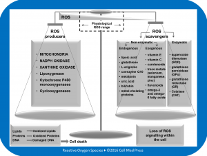

REVIEW ARTICLES
The Role of Reactive Oxygen Species in Epilepsy
Stjepana Kovac1,2, Albena T. Dinkova-Kostova3,4, and Andrey Y. Abramov1
1UCL Institute of Neurology, University College London, Queen Square, London WC1N 3BG, UK; 2Department of Neurology, University of Muenster, Albert-Schweitzer-Campus 1, 48149 Muenster, Germany; 3Jacqui Wood Cancer Centre, Division of Cancer Research, Medical Research Institute, University of Dundee, Dundee, DD1 9SY, Scotland, UK; 4Departments of Medicine and Pharmacology and Molecular Sciences, The Johns Hopkins University School of Medicine, Baltimore, MD 21205, USA
Correspondence: stjepana.kovac.09@ucl.ac.uk (S.K.), a.abramov@ucl.ac.uk (A.Y.A.)
Kovac S et al. Reactive Oxygen Species 1(1):38–52, 2016; ©2016 Cell Med Press
http://dx.doi.org/10.20455/ros.2016.807
(Received: December 17, 2015; Revised: December 21, 2015; Accepted: December 21, 2015)
ABSTRACT | Excess of reactive oxygen species (ROS) is increasingly recognized as a key factor in seizure-induced neuronal damage. Thus, targeting ROS is a priority to prevent seizures and epilepsy comorbidities such as cognitive decline, which are largely driven by neuronal damage. One drawback of this approach is that moderate levels of ROS are important in physiological cellular function and adaptation. This may also explain why antioxidant strategies targeting the brain have largely been unsuccessful. To overcome this difficulty, more fine-tuned ROS suppression in epilepsy is warranted. To achieve this goal, it is necessary to identify the key producers of ROS in seizures and epilepsy. Recent studies show that NADPH oxidase and xanthine oxidase are enzymes generating ROS in settings where energy metabolism is high, such as seen during seizure activity. An alternative approach is by targeting inducible networks of cellular antioxidant defences such as the Keap1–Nrf2 system. Nrf2 has emerged as a powerful regulator of endogenous antioxidant defences, and one drug (dimethyl fumarate) activating the Nrf2 pathway is already in use in inflammatory central nervous system (CNS) diseases. Both targeting key producers of ROS during seizure activity and Nrf2-enhancing strategies represent exciting new avenues of drug discovery in epilepsy.
KEYWORDS | Mitochondria; NADPH oxidase; Nrf2; Reactive oxygen species; Seizures; Xanthine oxidase
ABBREVIATIONS | ARE, antioxidant response element; ATP, adenosine triphosphate; CNS, central nervous system; GSH, reduced glutathione; Keap1, Kelch-like ECH-associated protein 1; MDA, malondialdehyde; MPTP, mitochondrial permeability transition pore; NMDA, N-methyl-D-aspartate; NMDAR, NMDA receptor; NOX, NADPH oxidase; Nrf2, nuclear factor (erythroid-derived 2)-like 2; ROS, reactive oxygen species; SERCA, sarcoendoplasmic reticulum calcium transport ATPase; SOD, superoxide dismutase; XO, xanthine oxidase
CONTENTS
1. Introduction
2. ROS Producers and ROS Scavengers Form a Fine-Tuned System Determining Cellular ROS Environment
3. ROS and the Brain
4. Epilepsy and Reactive Oxygen Species
5. Mitochondria–Source and Target of ROS in Epilepsy
6. NADPH Oxidase-Induced ROS Generation and Epilepsy
7. Xanthine Oxidase and Epilepsy
8. Other Sources of ROS in Epilepsy
9. Nrf2 and Epilepsy
10. Conclusions
1. INTRODUCTION
The term reactive oxygen species (ROS) is used to summarize oxygen radicals such as superoxide and hydroxyl radical, as well as H2O2, which readily forms oxygen radicals [1]. ROS are by-products of many biological reactions and generated at a low level during normal cellular activity. Initial interest in ROS was centred around the role of these species in cell damage as a result of ageing [2]. Later, the importance of ROS in physiological signalling was discovered, and the impact of ROS on cell damage in different acute and chronic diseases was recognized [3–5]. It is important to note that the reactivity of ROS varies from highly reactive species, such as the hydroxyl radical, to much less reactive species, such as hydrogen peroxide. Conversion of hydrogen peroxide into hydroxyl radicals is promoted by reduced transition metals, such as ferrous or cuprous ions, which is known as Fenton reaction [6]. This plays a role in iron and copper rich tissues such as the brain.
One important aspect to note is that ROS are produced constantly within the cell. This background ROS production is not only a by-product of enzymatic reactions such as at complexes I and II of the mitochondria, but plays a role in cellular adaptive mechanisms and signalling [7, 8]. It is only when this physiological ROS load is exceeded that the above mentioned mechanisms of cellular damage apply which are important in human disease.
But how do ROS cause cellular damage and cell death? First, ROS can lead to protein oxidation and thus dysfunction of enzymes and also to oxidative DNA damage. Damage to DNA can result in activation of repair enzymes, such as poly(ADP-ribose) polymerase (PARP), leading to rapid ATP depletion, thereby stimulating cell death cascades [9, 10]. Second, ROS contribute to mitochondrial permeability transition pore (MPTP) opening by increasing Ca2+ load. MPTP opening indicates a point of no return, resulting in a cascade leading to cell death. Ca2+ overload is a powerful trigger of MPTP, and ROS contribute to such overload via stimulating IP3/ryanodine receptors and inhibiting SERCA pumps and plasma membrane Ca2+ channels (PMCA) [11]. Besides the indirect effect of ROS on MPTP opening, ROS have an immediate, direct effect on MPTP opening, and MPTP opening can be triggered by substances that increase ROS such as tert-butyl hydroperoxide (t-BHP) or phenylarsine oxide (PAO) [12–14]. Third, ROS can react with lipids in cell membranes, a process termed lipid peroxidation. ROS degrade polyunsaturated lipids, forming malondialdehyde (MDA) and 4-hydroxynonenal (HNE), and thereby increase instability of the cell membranes.
2. ROS PRODUCERS AND ROS SCAVENGERS FORM A FINE-TUNED SYSTEM DETERMINING CELLULAR ROS ENVIRONMENT
The level of ROS within the cell depends on the activity of ROS producers and scavengers. A balance exists with extreme ends of the spectrum represented by excessive ROS production leading to cell death on the one side, and loss of physiological ROS signalling on the other side (Figure 1).
ROS scavengers, or antioxidants, are specialized molecules within the cell. ROS scavengers are either enzymes, such as catalase and superoxide dismutase (SOD), or non-enzymatic substances, including glutathione (Figure 1). Glutathione is certainly one of the most important antioxidants in the cell, which is typically found in millimolar concentrations. The maintenance of glutathione in the reduced state is dependent on NADPH, which is provided via the pentose phosphate pathway, an important pathway of glucose metabolism.
Different sources of ROS exist within the cell. These can be classified according to the (1) enzymatic and non-enzymatic reactions which lead to ROS generation [15], (2) compartments within the cell generating ROS, and (3) types of ROS generated. Interestingly, although it is likely that the type of ROS and the compartment generating ROS will have an impact on their toxicity to adjacent structures, not much attention has been paid to these factors. It is very difficult to determine the relative contribution of a particular ROS source to the net ROS burden and even more difficult to estimate the burden of ROS induced cell damage within the cell [16]. This is due to the fact that often in sub-compartments of the cell where ROS are produced in large amounts, scavengers are also readily available as exemplified by peroxisomes, where catalase, as an ROS scavenger, is abundant. This highlights that estimations of net ROS production are highly dependent on methods measuring ROS in the whole cells (i.e., in a physiological setting) [17]. Highly specialized antioxidants, such as catalase, are an important tool of self-defence within the cell whereby small concentrations of enzymes provide high efficiency buffering of ROS. Another form of ROS buffering is provided by non-enzymatic reactions (Figure 1).
It is even more difficult to estimate the relative contribution of different sources of ROS to the overall ROS production in the brain in vivo. The estimates that are available are based on non-physiological models such as isolated mitochondria. In addition, studies have used succinate as a substrate to stimulate ROS production [18]. Succinate is a non-physiological substrate which stimulates maximally mitochondrial ROS production, thereby limiting conclusions which can be drawn under physiological conditions [16]. These methodological limitations have been pointed out previously, and the cytosolic contribution to ROS production in homogenates is very likely underestimated [18].

{kind=link}
FIGURE 1. Cellular ROS homeostasis. See text (Section 2) for detailed description.
3. ROS AND THE BARIN
Whereas ROS contribute to disease in many organs, this is particularly true for the brain. The brain contributes to ~2% to the total body weight, yet consumes 20% of the oxygen through oxidative phosphorylation [19, 20]. Not only is there an abundance of oxygen in the brain which fuels production of ROS, but downstream ROS induced damage is also more likely given the high levels of oxidizable polyunsaturated fatty acids (PUFAs) in the brain [21]. In addition, redox active metals such as copper and iron are present throughout the brain with particularly high levels in the basal ganglia [22].
Detrimental effects of ROS have been shown in neurodegenerative disorders [23, 24] and also in acute neurological diseases, such as stroke [25]. Besides cell damage in ischemia, excessive neuronal activity such as that seen in seizures and epilepsy has been shown to be mediated by ROS [26, 27].
Epilepsy is one of the most common neurological diseases with a high incidence and prevalence [28]. Epilepsy has devastating consequences, and antiepileptic medication fails to control seizures in a third of patients warranting new treatment strategies [29]. Epilepsy is a chronic condition which has a significant impact on patient’s life. This is not only due to the debilitating nature of seizures, but also largely driven by co-morbidities including depression and cognitive decline [30, 31].
Epilepsy is defined as recurrent unprovoked seizures with seizures reflecting excessive neuronal activity [32]. The excessive neuronal activity can lead to cell death, and it is believed that such cell death contributes to epileptogenesis itself as well as co-morbidities seen in epilepsy [33]. Cell death in epilepsy is triggered by a cascade of events with calcium overload through NMDA receptors and subsequent excess ATP consumption to restore calcium homeostasis, representing the major initial hits to cell homeostasis. Both events are linked to an increase in enzymatic ROS production, with NMDA receptor opening triggering ROS production through NADPH oxidase [34] and ATP depletion feeding ROS production through xanthine oxidase given that breakdown of ATP in situations of high energy demand leads to increases of ATP metabolites which are substrates of xanthine oxidase [35]. ROS are produced during seizure activity and lead to cell death in prolonged seizures and epilepsy [26, 27]. ROS therefore are promising targets to address seizure-induced cell death. However, we and others have also shown that signalling cascades in the brain are fine-tuned by ROS [8, 36, 37]. Brain protection from ROS-induced injury, therefore, has to take this into account. How to effectively target ROS remains elusive. In the past, antioxidant strategies have mainly relied on antioxidants, scavengers of ROS. However, these have largely failed [38–40] warranting development of new treatment strategies.
Strategies aimed at more fine-tuned ROS homeostasis may solve this problem. Such strategies may aim at inhibiting sources of ROS rather than dampening overall ROS content within cells via antioxidants. Another option is to target endogenous key players of antioxidant defences. Such a key player is the nuclear factor (erythroid-derived 2)-like 2 (Nrf2). Nrf2 is a key transcription factor mediating protection against electrophiles and oxidants, thereby enhancing cell survival [41].
4. EPILEPSY AND REACTIVE OXYGEN SPECIES
Oxidative stress has been implicated in the pathology associated with acute seizures, status epilepticus and epilepsy. Evidence for increased ROS production in in vivo epilepsy models was initially collected in brain homogenates [42] and subsequently confirmed with fluorescent dyes in vitro [26, 43]. Prolonged seizures in rats lead to decreases in brain glutathione levels [44]. Interestingly, the ketogenic diet, an effective treatment for pharmacoresistant epilepsy, boosts glutathione levels in the brain [45]. There is a consensus about the fact that seizure activity induces ROS production and that this contributes to seizure induced cell death. That these ROS affect cell integrity has been demonstrated as well. MDA, a product of lipid peroxidation induced by ROS, has been shown to increase following chronic epilepsy [42, 46, 47]. However, the sources of ROS involved in seizure-induced cell damage remain a matter of debate. Traditionally, mitochondria have been proposed to be the main site of ROS production in seizures and epilepsy, but recent reports highlight that sources other than mitochondria are also involved in ROS generation during seizures, and may even be more important.
Therefore, we here aim to review the potential sources and mechanisms of ROS production in epilepsy and how targeting these sources can prevent seizures, epilepsy, and seizure-induced cell death. By summarizing these, we want to highlight potential future research pathways and translational aspects. Besides targeting sources of ROS production, we wish to highlight how regulation of key players of antioxidant defences may be used to protect cells from ROS-induced damage. Nrf2, which is increasingly recognized as the master regulator of cellular redox homeostasis, is one such key player.
5. MITOCHONDRIA–SOURCE AND TARGET OF ROS IN EPILEPSY
Where and how do mitochondria generate ROS? Pioneering work in the area of mitochondrial ROS production was done by Britton Chance and co-workers in the 1970s who discovered hydrogen peroxide production in mitochondria upon oxygen exposure [48, 49]. The sites at which mitochondria generate ROS have mostly been studied by providing electrons for specific complexes from appropriate substrates and using specific inhibitors. This way, one can pharmacologically isolate the maximum capacity of the mitochondrial site in producing ROS [50]. Via this approach, complexes I and III have traditionally been assumed as the sites of ROS production in mitochondria [51]. Recent studies have partly challenged these results and have shown that the site of mitochondrial ROS production is highly dependent on the substrate given in the experiment [52, 53].
Multiple studies and reviews have highlighted a role of mitochondria in seizure-induced ROS production [43, 54]. ROS production in mitochondria has been shown during seizures and this ROS production has been linked to complex III-dependent superoxide production [55]. However, there are also some conflicting results, and we have not found prominent ROS production of mitochondrial origin during seizure-like activity [26]. It is difficult to target mitochondria as a source of ROS production in seizures, given that mitochondria are involved in ATP production. Thus non-mitochondrial sources of ROS are increasingly recognized as better targets to address seizure-induced cell damage. Recent reports highlight that NADPH oxidase, an enzyme complex located at cellular membranes is involved in ROS production during seizures.
6. NADPH OXIDASE-INDUCED ROS GENERATION AND EPILEPSY
Even before the discovery of NADPH oxidase, it was known that certain cells in the immune system respire rapidly to generate a burst of respiratory activity, which was later discovered to be superoxide [56, 57]. It was a clinical observation which fuelled the discovery of the enzyme involved in generating this burst of ROS. Berendes and colleagues described a clinical syndrome in males with recurrent granulomatous infections, lymphadenopathy, and hypergammaglobulinemia, and the syndrome is referred to as chronic granulomatous disease [58]. It was found that patients suffering from this syndrome were lacking the respiratory phagocyte burst. Subsequent studies in these patients led to the discovery of the proteins involved in this respiratory burst including the catalytic key subunit of NADPH oxidase, gp91phox (NOX2) [59]. To date, different subtypes of the NADPH oxidase have been identified and named after the catalytic subunit as NOX1-5 enzymes in addition to two protein complexes which share similarities to the NOX proteins but have an additional extracellular peroxidase domain (DUOX 1 and 2 [60]). Importantly, the NADPH oxidase is a protein complex which is not constitutively active but requires assembly of a number of proteins to function [61] (Figure 2A and 2B). Upon activation, electrons can be transferred from the NADPH, which is used as a substrate, to an FAD binding site, then to two heme proteins, which ultimately react with oxygen to form superoxide [60, 62] (Figure 2C).
Whereas at the time of discovery of NADPH oxidase NOX proteins had been thought to represent a specific feature of the phagocyte machinery, over the past decades NOX protein expression has been shown in multiple tissues. NOX expression has been demonstrated in all types of brain cells except for oligodendrocytes [63]. The main NOX proteins reported in the brain are NOX1, NOX2, and NOX4. Interestingly, different NOX isoforms have been implicated in different diseases. Brain ischemia for example has been linked to the NOX4 isoform, and NMDA receptor activation to the NOX2 isoform [34]. Another important feature of the NADPH oxidase system is its subcellular distribution. NOX enzymes are transmembrane proteins. Subunits of NOX2-protein complex are present in the cytoplasm and translocate to assemble with membrane bound NOX2 (gp91) to form the fully functional NADPH oxidase (Figure 2B). This is important since it highlights two characteristics of NADPH oxidases: First, NOX2–NADPH oxidase is a proteins complex, which is not constitutively active, but activated after assembly. Second, NOX2, the functional subunit, is bound to a membrane. NADPH oxidase can be bound to the plasma membrane and also to intracellular membranes. It is also possible that in different cell types different locations of NADPH oxidase are found. In neurons, for example, NOX2 has been found to be located at the synaptic membrane [64]. For the NOX4 isoform, studies have suggested its binding to intracellular membranes, particularly the endoplasmic reticulum [65].
The NMDA receptor plays an important role in excitation and thus also in seizures which can be seen as the maximum expression of hyperexcitability. We have recently demonstrated NMDA receptor-dependant activation of NADPH oxidase during seizure-like activity [26], and we have shown that this leads to cell death (Figure 3). In vivo evidence confirms this, and seizure induced cell death has been ameliorated in the pilocarpine model of epilepsy by suppressing ROS generation via NADPH oxidase [66, 67]. This role of NADPH oxidase has been supported by a recent study showing NOX2 expression in both neurons and glial cells of human epileptic hippocampi obtained from epilepsy surgery for pharmacoresistant epilepsy [68].
But how to target ROS production via NADPH oxidase? Unfortunately, a chemical isoform-specific targeting of NADPH oxidase is not possible since NADPH oxidase inhibitors are largely unspecific. It also seems that this is a difficult strategy since NADPH oxidase isoforms are not tissue specific; for example, NOX2 is present both in neurons and in leukocytes. Systemic suppression of NADPH oxidase, therefore, is likely to disrupt the immune response. One possibility to circumvent this is to indirectly block NADPH oxidase. NADPH oxidase is a transmembrane enzyme which generates superoxide upon activation. By generating a charged molecule, it also requires charge compensation to fully function. Such charge compensation in phagocytes is provided by Hv1 proton channel, and superoxide production is substantially reduced in the absence of Hv1 [69]. Interestingly, in rat brain slices charge compensation and thus function of NADPH oxidase are not dependent on a proton current [70]. Up until now, the mechanism of charge compensation after NADPH oxidase activation in the brain remains unknown. It is likely that this charge compensatory mechanism is an attractive target for CNS drug development and for new antiepileptic strategies.
ROS generated through membrane-bound NADPH oxidase are likely a consequence of excessive synaptic activity and thus NMDA receptor activation, such as that seen in seizures. Yet, there are other mechanisms that might lead to ROS production in seizures. Seizure activity produces large ionic currents with the subsequent demand for energy to restore ionic transmembrane homeostasis. This involves breakdown of energetic substrates such as ATP, which leads to an increase in adenosine as a metabolite of ATP. Adenosine is metabolized amongst others by xanthine oxidase which, as noted below, is an important producer of ROS.
{kind=link}
FIGURE 2. NADPH oxidase assembly. Subunits of the NADPH oxidase complex are present in the cytoplasm (A). Upon activation NADPH oxidase subunits assemble to form the functional NADPH oxidase, a transmembrane enzyme capable of generating superoxide (B). The functional subunit of this enzyme represents single electron transporters that pass electrons from NADPH to FAD to the first heme to the second heme that finally provides electrons to oxygen, thereby generating superoxide (C); figure modified after [60].
7. XANTHINE OXIDASE AND EPILEPSY
Xanthine oxidase (XO), a ubiquitously expressed flavoprotein, is widely distributed in mammalian tissues and is a key enzyme of purine catabolism [35]. It is located in the cytoplasm [71] and on the cell membrane [72]. XO catalyses both the transformation of hypoxanthine to xanthine and the conversion of xanthine to uric acid. In this process, H2O2 is generated. XO expression is high in the liver and intestine though this enzyme has been shown to play a role in brain injury, and notably, ROS generated by XO were shown to play a role in stroke [73–75]. It is important to note that XO-catalysed metabolism is indirectly linked to energetic substrates since the purine analogue adenosine, a catabolite of ATP, fuels xanthine metabolism. Under conditions of ATP depletion, adenosine is likely to increase with an increase of ROS produced by XO. We have previously shown that seizure-like activity leads to ATP depletion [76]. It is likely that increased XO-catalysed metabolism and thus ROS generated by this enzyme play a role in sustained seizure activity, such as that seen in status epilepticus, when ATP levels are depleted. We have shown that XO inhibition can reduce seizure-induced cell death in vitro [26]. Nevertheless, inhibition of XO has shown conflicting results in the treatment of seizures with some studies reporting a benefit [77–80], whereas other studies failed to show an effect [81, 82]. XO inhibition is certainly an appealing strategy since inhibitors of this enzyme are readily available and can easily cross the blood brain barrier [83].
Targeting sources of ROS during seizure activity is an appealing strategy to decrease the ROS burden and thus ROS-induced cellular damage in seizures. Besides this, transcriptional regulation of antioxidant genes is emerging as a powerful tool in controlling cellular ROS load. Such transcriptional regulator is Nrf2 (Figure 3).
8. OTHER SOURCES OF ROS IN EPILEPSY
Cyclooxygenase and lipoxygenase metabolize arachidonic acid after its release from membrane phospholipids through the action of phospholipase A. Both lipoxygenase and cyclooxygenase are powerful mediators of inflammation, and non-steroidal anti-inflammatory drugs largely work through inhibition of cyclooxygenase. Cyclooxygenase- and lipoxygenase-catalysed oxidation reactions involve generation of ROS. There is evidence that lipoxygenase may be active during kainic acid-induced seizures in rats [84], and inhibition of lipoxygenase and cyclooxygenase protects rats against kainic acid-induced seizures and neurotoxicity [85], an effect which may in part be mediated via ROS inhibition.
The cytochrome P450 system is another family of enzymes, which generate ROS. Cytochrome P450 enzymes have mainly been linked to antiepileptic drug metabolism and are expressed in high levels in the liver. Expression levels of these enzymes in brain tissues are low [86]. In addition, chemical induction of brain cytochrome P450 enzymes did not lead to any relevant lipid peroxidation, suggesting that the ROS generated by cytochrome P450 enzymes are efficiently scavenged by antioxidant systems [87].
9. NRF2 AND EPILEPSY
Nrf2 is a powerful regulator of endogenous antioxidant defenses [41]. One of the main negative regulators of Nrf2 is cytoplasmic Kelch-like ECH-associated protein 1 (Keap1) [88], which continuously targets the transcription factor for ubiquitination and proteosomal degradation [89–91]. The Keap1–Nrf2 system controls an important inducible network of cellular antioxidant defences. Small molecule inducers activate Nrf2 by chemically modifying reactive cysteine sensors of Keap1 [92, 93] or by disrupting the Keap1–Nrf2 binding interface [94, 95]. This leads to Nrf2 stabilization, which then translocates to the nucleus and binds (as a heterodimer with a small Maf transcription factor) to the antioxidant response elements (AREs), specific sequences present in the promoter regions of its target genes, ultimately stimulating the transcription of genes that encode antioxidant proteins [96]. These include enzymes involved in ROS scavenging or inhibition of ROS formation, such as glutathione S-transferases (GSTs) and NAD(P)H:quinone oxidoreductase 1 (NQO1). Nrf2 also regulates the gene expression of both the catalytic (GCLC) and the regulatory (GCLM) subunits of g-glutamylcysteine ligase (GCL), the enzyme that catalyses the rate-limiting step in the biosynthesis of reduced glutathione (GSH) [97], as well as of the xCT subunit of system xcˉ, which imports cystine into cells [98], in turn providing the cysteine precursor for GSH biosynthesis. In addition to its role in GSH biosynthesis, Nrf2 is critical for the conversion of oxidized glutathione (GSSG) to GSH by regulating the transcription of the glutathione reductase 1 (GR1) gene [99], and the genes encoding four principal NADPH-generating enzymes, i.e., malic enzyme 1 (ME1), isocitrate dehydrogenase 1 (IDH1), glucose-6-phosphate dehydrogenase (G6PD), and 6-phosphogluconate dehydrogenase (PGD) [100–103]. Thioredoxin (TXN), thioredoxin reductase 1 (TXNR1), and sulfiredoxin (SRX), which are needed for the reduction of oxidized protein thiols, are also direct transcriptional targets of Nrf2 [104–107].
Our groups have highlighted an important role of Nrf2 in boosting substrate availability for mitochondrial respiration [108, 109], thereby also inevitably influencing mitochondrial ROS production. As would be predicted with high substrate availability fuelling hyperpolarization of the mitochondrial membrane potential, we found that ROS of mitochondrial origin are increased when Nrf2 is constitutively active as, for example, in Keap1-deficient cell lines [110]. More recently, we found that not only mitochondria are affected by Nrf2 induction, but also NOX type expression, with different expression patterns of NOX subtypes in cell lines with constitutively active Nrf2 compared to controls [110]. This highlights a fine-tuned NOX regulation, which may allow prevention of negative side effects on brain signalling due to excessive NOX suppression.
Attempts at targeting Nrf2 activation as a key regulator of the cellular redox metabolism for cytoprotection have been promising [111], and a potent naturally occurring inducer of Nrf2, sulforaphane, has entered clinical trials using well characterized and highly standardized plant extracts as sources of sulforaphane [112, 113]. Nrf2 involvement in epilepsy has been studied by Mazzuferi and colleagues [114]. They started by screening biosets from epilepsy-related studies. Using this bottom-up approach they were able to identify Nrf2 as a key transcription factor in epileptic tissues. They showed that Nrf2 is activated in a short window after status epilepticus, and they were able to demonstrate that overexpression of Nrf2 through an adeno-associated virus vector (AAV) reduced seizure-induced neuronal cell death in vivo. Pharmacological activation of Nrf2 by sulforaphane was found to suppress the progression of amygdala kindling in rats [115]. Dimethyl fumarate, a drug which has been licensed for the treatment of relapsing multiple sclerosis, is another Nrf2 inducer which is already in clinical use [116].
10. CONCLUSIONS
ROS have been convincingly shown to contribute to seizures, epilepsy, and epilepsy co-morbidities. Combating ROS, which are also by-products of seizure activity, might reduce epileptogenesis (i.e., the development of epilepsy itself), lower seizure frequency, and prevent cell death in epilepsy. Preventing cell death in epilepsy is a priority since it likely contributes to co-morbidities in epilepsy, such as depression and impaired memory function.
Research related to ROS in epilepsy–like in other neurological diseases–has focused on restoring redox balance by scavenging ROS. This approach dismisses the fine-tuned ROS system, which is also implicated in brain signalling. In addition scavenging ROS is difficult to achieve in vivo, and antioxidant trials aimed at scavenging ROS in brain disease have largely failed [38]. Such failure might be explained by pharmacokinetic and pharmacodynamic properties of antioxidants, as well as by their ability in certain cases to behave as pro-oxidants, which hamper their exogenous application. In contrast to the relatively inefficient and short-lived nature of small molecule exogenous antioxidants, the endogenous antioxidant system regulated by the Keap1–Nrf2 pathway provides a highly efficient and long-lasting means to counteract the deleterious effects of ROS as the ultimate antioxidants are proteins with long half-lives. In order to boost the discovery of therapies targeting ROS-induced damage in epilepsy, the spatial distribution of ROS generators within the cell and their importance in different temporal phases of the seizure and epilepsy need to be unravelled.
Recently, the focus has shifted to NADPH oxidase as an important ROS producer in epilepsy (Figure 3). This membrane bound enzyme complex is located in proximity of synapses and its activity has been linked to NMDA receptor opening [34], thus being at the hotspot of excitatory transmission, which is the core feature of seizure activity. Targeting NADPH oxidase is difficult, and unselective NADPH oxidase inhibitors are likely to fail due to side effects such as bacterial infections given the importance of NADPH oxidase in mediating the immune response through phagocytes. One way to circumvent this is to unravel the mechanism which is involved to compensate for the charge that is created upon activation of NADPH oxidase. Interfering with this mechanism is likely to reduce NADPH oxidase function. So far it remains unclear what this mechanism is in the brain, but it seems to be tissue specific and is different from the charge compensatory mechanism in phagocytes, which is mediated by proton channels [69, 70]. We believe that targeting this mechanism will be an exciting avenue for drug discovery. Another approach which may be complementary to this is the interference with XO.
Very little research has been dedicated to XO and its role in seizure-induced ROS generation. It is likely that this enzyme’s contribution to overall cellular ROS production increases as seizures progress given its strong link to ATP metabolism. There is experimental evidence that ATP levels decline ~40 min after prolonged seizures [117], leading to raised purine metabolites such as hypoxanthine and xanthine. These are metabolized by XO, which produces ROS. Targeting this enzyme is attractive since blood brain barrier-permeable inhibitors are readily available. Given that NADPH oxidase and XO represent different mechanisms of ROS production possibly acting at different stages of seizure activity, it is likely that a combination approach might be the most efficient way to combat ROS production in the course of seizures and status epilepticus (Figure 3).
{kind=link}
FIGURE 3. ROS producers, targets of ROS, and ROS scavengers in epilepsy. NADPH oxidase and xanthine oxidase are key players of ROS production during seizure-like activity. NADPH oxidase is activated via NMDA receptors during excessive hyperexcitability such as is seen during seizure activity. Targets of ROS- induced damage are not only mitochondria, but also DNA, proteins, and lipids. Nrf2, a key regulator of antioxidant defenses is activated in situations where the cellular ROS burden is high. MCU denotes mitochondrial calcium uniporter.
ACKNOWLEDGMENTS
This work was supported by Epilepsy Research UK.
REFERENCES
- Droge W. Free radicals in the physiological control of cell function. Physiol Rev 2002; 82(1):47–95. doi: 10.1152/physrev.00018.2001.
- Harman D. The aging process. Proc Natl Acad Sci USA 1981; 78(11):7124–8.
- White AA, Crawford KM, Patt CS, Lad PJ. Activation of soluble guanylate cyclase from rat lung by incubation or by hydrogen peroxide. J Biol Chem 1976; 251(23):7304–12.
- Radomski MW, Palmer RM, Moncada S. The anti-aggregating properties of vascular endothelium: interactions between prostacyclin and nitric oxide. Br J Pharmacol 1987; 92(3):639–46.
- Ignarro LJ, Kadowitz PJ. The pharmacological and physiological role of cyclic GMP in vascular smooth muscle relaxation. Annu Rev Pharmacol Toxicol 1985; 25:171–91. doi: 10.1146/annurev.pa.25.040185.001131.
- Chance B, Sies H, Boveris A. Hydroperoxide metabolism in mammalian organs. Physiol Rev 1979; 59(3):527–605.
- Ray PD, Huang BW, Tsuji Y. Reactive oxygen species (ROS) homeostasis and redox regulation in cellular signaling. Cell Signal 2012; 24(5):981–90. doi: 10.1016/j.cellsig.2012.01.008.
- Domijan AM, Kovac S, Abramov AY. Lipid peroxidation is essential for phospholipase C activity and the inositol–trisphosphate–related Ca2+ signal. J Cell Sci 2014; 127(Pt 1):21–6. doi: 10.1242/jcs.138370.
- Szabo C. Role of poly(ADP-ribose)synthetase in inflammation. Eur J Pharmacol 1998; 350(1):1–19.
- Heeres JT, Hergenrother PJ. Poly(ADP-ribose) makes a date with death. Curr Opin Chem Biol 2007; 11(6):644–53. doi: 10.1016/j.cbpa.2007.08.038.
- Camello-Almaraz C, Gomez-Pinilla PJ, Pozo MJ, Camello PJ. Mitochondrial reactive oxygen species and Ca2+ signaling. Am J Physiol Cell Physiol 2006; 291(5):C1082–8. doi: 10.1152/ajpcell.00217.2006.
- Kowaltowski AJ, Castilho RF. Ca2+ acting at the external side of the inner mitochondrial membrane can stimulate mitochondrial permeability transition induced by phenylarsine oxide. Biochim Biophys Acta 1997; 1322(2–3):221–9.
- Kowaltowski AJ, Vercesi AE, Castilho RF. Mitochondrial membrane protein thiol reactivity with N-ethylmaleimide or mersalyl is modified by Ca2+: correlation with mitochondrial permeability transition. Biochim Biophys Acta 1997; 1318(3):395–402.
- Vercesi AE, Kowaltowski AJ, Grijalba MT, Meinicke AR, Castilho RF. The role of reactive oxygen species in mitochondrial permeability transition. Biosci Rep 1997; 17(1):43–52.
- Cohen G. Enzymatic/nonenzymatic sources of oxyradicals and regulation of antioxidant defenses. Ann N Y Acad Sci 1994; 738:8–14.
- Brown GC, Borutaite V. There is no evidence that mitochondria are the main source of reactive oxygen species in mammalian cells. Mitochondrion 2012; 12(1):1–4. doi: 10.1016/j.mito.2011.02.001.
- Mueller S, Weber A, Fritz R, Mutze S, Rost D, Walczak H, et al. Sensitive and real-time determination of H2O2 release from intact peroxisomes. Biochem J 2002; 363(Pt 3):483–91.
- Kudin AP, Malinska D, Kunz WS. Sites of generation of reactive oxygen species in homogenates of brain tissue determined with the use of respiratory substrates and inhibitors. Biochim Biophys Acta 2008; 1777(7–8):689–95. doi: 10.1016/j.bbabio.2008.05.010.
- Magistretti PJ, Pellerin L. Cellular mechanisms of brain energy metabolism: relevance to functional brain imaging and to neurodegenerative disorders. Ann N Y Acad Sci 1996; 777:380–7.
- Quastel JH, Wheatley AH. Oxidations by the brain. Biochem J 1932; 26(3):725–44.
- Halliwell B. Oxidative stress and neurodegeneration: where are we now? J Neurochem 2006; 97(6):1634–58. doi: 10.1111/j.1471-4159.2006.03907.x.
- Que EL, Domaille DW, Chang CJ. Metals in neurobiology: probing their chemistry and biology with molecular imaging. Chem Rev 2008; 108(5):1517–49. doi: 10.1021/cr078203u.
- Abramov AY, Canevari L, Duchen MR. Beta-amyloid peptides induce mitochondrial dysfunction and oxidative stress in astrocytes and death of neurons through activation of NADPH oxidase. J Neurosci 2004; 24(2):565–75. doi: 10.1523/JNEUROSCI.4042-03.2004.
- Gandhi S, Wood-Kaczmar A, Yao Z, Plun-Favreau H, Deas E, Klupsch K, et al. PINK1-associated Parkinson’s disease is caused by neuronal vulnerability to calcium-induced cell death. Mol Cell 2009; 33(5):627–38. doi: 10.1016/j.molcel.2009.02.013.
- Abramov AY, Scorziello A, Duchen MR. Three distinct mechanisms generate oxygen free radicals in neurons and contribute to cell death during anoxia and reoxygenation. J Neurosci 2007; 27(5):1129–38. doi: 10.1523/JNEUROSCI.4468-06.2007.
- Kovac S, Domijan AM, Walker MC, Abramov AY. Seizure activity results in calcium- and mitochondria-independent ROS production via NADPH and xanthine oxidase activation. Cell Death Dis 2014; 5:e1442. doi: 10.1038/cddis.2014.390.
- Layton ME, Pazdernik TL. Reactive oxidant species in piriform cortex extracellular fluid during seizures induced by systemic kainic acid in rats. J Mol Neurosci 1999; 13(1–2):63–8. doi: 10.1385/JMN:13:1-2:63.
- MacDonald BK, Cockerell OC, Sander JW, Shorvon SD. The incidence and lifetime prevalence of neurological disorders in a prospective community-based study in the UK. Brain 2000; 123(Pt 4):665–76.
- Duncan JS, Sander JW, Sisodiya SM, Walker MC. Adult epilepsy. Lancet 2006; 367(9516):1087–100. doi: 10.1016/S0140-6736(06)68477-8.
- Kilpatrick C, Murrie V, Cook M, Andrewes D, Desmond P, Hopper J. Degree of left hippocampal atrophy correlates with severity of neuropsychological deficits. Seizure 1997; 6(3):213–8.
- Helmstaedter C, Elger CE. Chronic temporal lobe epilepsy: a neurodevelopmental or progressively dementing disease? Brain 2009; 132(Pt 10):2822–30. doi: 10.1093/brain/awp182.
- Fisher RS, Acevedo C, Arzimanoglou A, Bogacz A, Cross JH, Elger CE, et al. ILAE official report: a practical clinical definition of epilepsy. Epilepsia 2014; 55(4):475–82. doi: 10.1111/epi.12550.
- Pitkanen A, Lukasiuk K. Mechanisms of epileptogenesis and potential treatment targets. Lancet Neurol 2011; 10(2):173–86. doi: 10.1016/S1474-4422(10)70310-0.
- Brennan AM, Suh SW, Won SJ, Narasimhan P, Kauppinen TM, Lee H, et al. NADPH oxidase is the primary source of superoxide induced by NMDA receptor activation. Nat Neurosci 2009; 12(7):857–63. doi: 10.1038/nn.2334.
- Harrison R. Structure and function of xanthine oxidoreductase: where are we now? Free Radic Biol Med 2002; 33(6):774–97.
- De Pasquale R, Beckhauser TF, Hernandes MS, Giorgetti Britto LR. LTP and LTD in the visual cortex require the activation of NOX2. J Neurosci 2014; 34(38):12778–87. doi: 10.1523/JNEUROSCI.1414-14.2014.
- Liu HT, Akita T, Shimizu T, Sabirov RZ, Okada Y. Bradykinin-induced astrocyte-neuron signalling: glutamate release is mediated by ROS-activated volume-sensitive outwardly rectifying anion channels. J Physiol 2009; 587(Pt 10):2197–209. doi: 10.1113/jphysiol.2008.165084.
- Kamat CD, Gadal S, Mhatre M, Williamson KS, Pye QN, Hensley K. Antioxidants in central nervous system diseases: preclinical promise and translational challenges. J Alzheimers Dis 2008; 15(3):473–93.
- Sano M, Ernesto C, Thomas RG, Klauber MR, Schafer K, Grundman M, et al. A controlled trial of selegiline, alpha-tocopherol, or both as treatment for Alzheimer’s disease. The Alzheimer’s Disease Cooperative Study. N Engl J Med 1997; 336(17):1216–22. doi: 10.1056/NEJM199704243361704.
- Barnes DE, Yaffe K. Vitamin E and donepezil for the treatment of mild cognitive impairment. N Engl J Med 2005; 353(9):951–2; author reply -2. doi: 10.1056/NEJMc051856.
- Hayes JD, Dinkova-Kostova AT. The Nrf2 regulatory network provides an interface between redox and intermediary metabolism. Trends Biochem Sci 2014; 39(4):199–218. doi: 10.1016/j.tibs.2014.02.002.
- Bruce AJ, Baudry M. Oxygen free radicals in rat limbic structures after kainate-induced seizures. Free Radic Biol Med 1995; 18(6):993–1002.
- Kovacs R, Schuchmann S, Gabriel S, Kann O, Kardos J, Heinemann U. Free radical-mediated cell damage after experimental status epilepticus in hippocampal slice cultures. J Neurophysiol 2002; 88(6):2909–18. doi: 10.1152/jn.00149.2002.
- Sleven H, Gibbs JE, Heales S, Thom M, Cock HR. Depletion of reduced glutathione precedes inactivation of mitochondrial enzymes following limbic status epilepticus in the rat hippocampus. Neurochem Int 2006; 48(2):75–82. doi: 10.1016/j.neuint.2005.10.002.
- Jarrett SG, Milder JB, Liang LP, Patel M. The ketogenic diet increases mitochondrial glutathione levels. J Neurochem 2008; 106(3):1044–51. doi: 10.1111/j.1471-4159.2008.05460.x.
- Frantseva MV, Perez Velazquez JL, Tsoraklidis G, Mendonca AJ, Adamchik Y, Mills LR, et al. Oxidative stress is involved in seizure-induced neurodegeneration in the kindling model of epilepsy. Neuroscience 2000; 97(3):431–5.
- Tejada S, Sureda A, Roca C, Gamundi A, Esteban S. Antioxidant response and oxidative damage in brain cortex after high dose of pilocarpine. Brain Res Bull 2007; 71(4):372–5. doi: 10.1016/j.brainresbull.2006.10.005.
- Boveris A, Chance B. The mitochondrial generation of hydrogen peroxide. General properties and effect of hyperbaric oxygen. Biochem J 1973; 134(3):707–16.
- Boveris A, Oshino N, Chance B. The cellular production of hydrogen peroxide. Biochem J 1972; 128(3):617–30.
- Quinlan CL, Goncalves RL, Hey-Mogensen M, Yadava N, Bunik VI, Brand MD. The 2-oxoacid dehydrogenase complexes in mitochondria can produce superoxide/hydrogen peroxide at much higher rates than complex I. J Biol Chem 2014; 289(12):8312–25. doi: 10.1074/jbc.M113.545301.
- Brand MD. The sites and topology of mitochondrial superoxide production. Exp Gerontol 2010; 45(7–8):466–72. doi: 10.1016/j.exger.2010.01.003.
- Quinlan CL, Perevoshchikova IV, Hey-Mogensen M, Orr AL, Brand MD. Sites of reactive oxygen species generation by mitochondria oxidizing different substrates. Redox Biol 2013; 1:304–12. doi: 10.1016/j.redox.2013.04.005.
- Quinlan CL, Treberg JR, Perevoshchikova IV, Orr AL, Brand MD. Native rates of superoxide production from multiple sites in isolated mitochondria measured using endogenous reporters. Free Radic Biol Med 2012; 53(9):1807–17. doi: 10.1016/j.freeradbiomed.2012.08.015.
- Waldbaum S, Patel M. Mitochondrial dysfunction and oxidative stress: a contributing link to acquired epilepsy? J Bioenerg Biomembr 2010; 42(6):449–55. doi: 10.1007/s10863-010-9320-9.
- Malinska D, Kulawiak B, Kudin AP, Kovacs R, Huchzermeyer C, Kann O, et al. Complex III-dependent superoxide production of brain mitochondria contributes to seizure-related ROS formation. Biochim Biophys Acta 2010; 1797(6–7):1163–70. doi: 10.1016/j.bbabio.2010.03.001.
- Heyne K, Gahr M. Differentiation between glycogenosis types Ia and Ib by measurement of extra respiration during phagocytosis by polymorphonuclear leukocytes? Eur J Pediatr 1980; 133(1):69.
- Babior BM, Kipnes RS, Curnutte JT. Biological defense mechanisms. The production by leukocytes of superoxide, a potential bactericidal agent. J Clin Invest 1973; 52(3):741–4. doi: 10.1172/JCI107236.
- Berendes H, Bridges RA, Good RA. A fatal granulomatosus of childhood: the clinical study of a new syndrome. Minn Med 1957; 40(5):309–12.
- Royer-Pokora B, Kunkel LM, Monaco AP, Goff SC, Newburger PE, Baehner RL, et al. Cloning the gene for an inherited human disorder–chronic granulomatous disease–on the basis of its chromosomal location. Nature 1986; 322(6074):32–8. doi: 10.1038/322032a0.
- Bedard K, Krause KH. The NOX family of ROS-generating NADPH oxidases: physiology and pathophysiology. Physiol Rev 2007; 87(1):245–313. doi: 10.1152/physrev.00044.2005.
- Sumimoto H, Hata K, Mizuki K, Ito T, Kage Y, Sakaki Y, et al. Assembly and activation of the phagocyte NADPH oxidase: specific interaction of the N-terminal Src homology 3 domain of p47phox with p22phox is required for activation of the NADPH oxidase. J Biol Chem 1996; 271(36):22152–8.
- Sorce S, Krause KH. NOX enzymes in the central nervous system: from signaling to disease. Antioxid Redox Signal 2009; 11(10):2481–504. doi: 10.1089/ARS.2009.2578.
- Nayernia Z, Jaquet V, Krause KH. New insights on NOX enzymes in the central nervous system. Antioxid Redox Signal 2014; 20(17):2815–37. doi: 10.1089/ars.2013.5703.
- Tejada-Simon MV, Serrano F, Villasana LE, Kanterewicz BI, Wu GY, Quinn MT, et al. Synaptic localization of a functional NADPH oxidase in the mouse hippocampus. Mol Cell Neurosci 2005; 29(1):97–106. doi: 10.1016/j.mcn.2005.01.007.
- Chen K, Kirber MT, Xiao H, Yang Y, Keaney JF, Jr. Regulation of ROS signal transduction by NADPH oxidase 4 localization. J Cell Biol 2008; 181(7):1129–39. doi: 10.1083/jcb.200709049.
- Kim JH, Jang BG, Choi BY, Kim HS, Sohn M, Chung TN, et al. Post-treatment of an NADPH oxidase inhibitor prevents seizure-induced neuronal death. Brain Res 2013; 1499:163–72. doi: 10.1016/j.brainres.2013.01.007.
- Pestana RR, Kinjo ER, Hernandes MS, Britto LR. Reactive oxygen species generated by NADPH oxidase are involved in neurodegeneration in the pilocarpine model of temporal lobe epilepsy. Neurosci Lett 2010; 484(3):187–91. doi: 10.1016/j.neulet.2010.08.049.
- Pecorelli A, Natrella F, Belmonte G, Miracco C, Cervellati F, Ciccoli L, et al. NADPH oxidase activation and 4-hydroxy-2-nonenal/aquaporin-4 adducts as possible new players in oxidative neuronal damage presents in drug-resistant epilepsy. Biochim Biophys Acta 2015; 1852(3):507–19. doi: 10.1016/j.bbadis.2014.11.016.
- Ramsey IS, Ruchti E, Kaczmarek JS, Clapham DE. Hv1 proton channels are required for high-level NADPH oxidase-dependent superoxide production during the phagocyte respiratory burst. Proc Natl Acad Sci USA 2009; 106(18):7642–7. doi: 10.1073/pnas.0902761106.
- De Simoni A, Allen NJ, Attwell D. Charge compensation for NADPH oxidase activity in microglia in rat brain slices does not involve a proton current. Eur J Neurosci 2008; 28(6):1146–56. doi: 10.1111/j.1460-9568.2008.06417.x.
- Jarasch ED, Grund C, Bruder G, Heid HW, Keenan TW, Franke WW. Localization of xanthine oxidase in mammary-gland epithelium and capillary endothelium. Cell 1981; 25(1):67–82.
- Rouquette M, Page S, Bryant R, Benboubetra M, Stevens CR, Blake DR, et al. Xanthine oxidoreductase is asymmetrically localised on the outer surface of human endothelial and epithelial cells in culture. FEBS Lett 1998; 426(3):397–401.
- Granger DN, Rutili G, McCord JM. Superoxide radicals in feline intestinal ischemia. Gastroenterology 1981; 81(1):22–9.
- Granger DN, Hollwarth ME, Parks DA. Ischemia-reperfusion injury: role of oxygen-derived free radicals. Acta Physiol Scand Suppl 1986; 548:47–63.
- McCord JM. Oxygen-derived free radicals in postischemic tissue injury. N Engl J Med 1985; 312(3):159–63. doi: 10.1056/NEJM198501173120305.
- Kovac S, Domijan AM, Walker MC, Abramov AY. Prolonged seizure activity impairs mitochondrial bioenergetics and induces cell death. J Cell Sci 2012; 125(Pt 7):1796–806. doi: 10.1242/jcs.099176.
- Coleman M, Landgrebe M, Landgrebe A. Progressive seizures with hyperuricosuria reversed by allopurinol. Arch Neurol 1974; 31(4):238–42.
- Zagnoni PG, Bianchi A, Zolo P, Canger R, Cornaggia C, D’Alessandro P, et al. Allopurinol as add-on therapy in refractory epilepsy: a double-blind placebo-controlled randomized study. Epilepsia 1994; 35(1):107–12.
- DeMarco P, Zagnoni P. Allopurinol and severe epilepsy. Neurology 1986; 36(11):1538–9.
- Togha M, Akhondzadeh S, Motamedi M, Ahmadi B, Razeghi S. Allopurinol as adjunctive therapy in intractable epilepsy: a double-blind and placebo-controlled trial. Arch Med Res 2007; 38(3):313–6. doi: 10.1016/j.arcmed.2006.10.010.
- Sander JW, Patsalos PN. Allopurinol as an add-on drug in the management of intractable epilepsy. Epilepsy Res 1988; 2(3):223–5.
- Coppola G, Pascotto A. Double-blind, placebo-controlled, cross-over trial of allopurinol as add-on therapy in childhood refractory epilepsy. Brain Dev 1996; 18(1):50–2.
- Elion GB, Kovensky A, Hitchings GH. Metabolic studies of allopurinol, an inhibitor of xanthine oxidase. Biochem Pharmacol 1966; 15(7):863–80.
- Ueda Y, Yokoyama H, Niwa R, Konaka R, Ohya-Nishiguchi H, Kamada H. Generation of lipid radicals in the hippocampal extracellular space during kainic acid-induced seizures in rats. Epilepsy Res 1997; 26(2):329–33.
- Baran H, Vass K, Lassmann H, Hornykiewicz O. The cyclooxygenase and lipoxygenase inhibitor BW755C protects rats against kainic acid-induced seizures and neurotoxicity. Brain Res 1994; 646(2):201–6.
- Hedlund E, Gustafsson JA, Warner M. Cytochrome P450 in the brain; a review. Curr Drug Metab 2001; 2(3):245–63.
- Liu L, Bridges RJ, Eyer CL. Effect of cytochrome P450 1A induction on oxidative damage in rat brain. Mol Cell Biochem 2001; 223(1–2):89–94.
- Itoh K, Wakabayashi N, Katoh Y, Ishii T, Igarashi K, Engel JD, et al. Keap1 represses nuclear activation of antioxidant responsive elements by Nrf2 through binding to the amino-terminal Neh2 domain. Genes Dev 1999; 13(1):76–86.
- Cullinan SB, Gordan JD, Jin J, Harper JW, Diehl JA. The Keap1-BTB protein is an adaptor that bridges Nrf2 to a Cul3-based E3 ligase: oxidative stress sensing by a Cul3-Keap1 ligase. Mol Cell Biol 2004; 24(19):8477-86. doi: 10.1128/MCB.24.19.8477–8486.2004.
- Kobayashi A, Kang MI, Okawa H, Ohtsuji M, Zenke Y, Chiba T, et al. Oxidative stress sensor Keap1 functions as an adaptor for Cul3-based E3 ligase to regulate proteasomal degradation of Nrf2. Mol Cell Biol 2004; 24(16):7130–9. doi: 10.1128/MCB.24.16.7130-7139.2004.
- Zhang DD, Lo SC, Cross JV, Templeton DJ, Hannink M. Keap1 is a redox-regulated substrate adaptor protein for a Cul3-dependent ubiquitin ligase complex. Mol Cell Biol 2004; 24(24):10941–53. doi: 10.1128/MCB.24.24.10941-10953.2004.
- Dinkova-Kostova AT, Holtzclaw WD, Cole RN, Itoh K, Wakabayashi N, Katoh Y, et al. Direct evidence that sulfhydryl groups of Keap1 are the sensors regulating induction of phase 2 enzymes that protect against carcinogens and oxidants. Proc Natl Acad Sci USA 2002; 99(18):11908–13. doi: 10.1073/pnas.172398899.
- McMahon M, Lamont DJ, Beattie KA, Hayes JD. Keap1 perceives stress via three sensors for the endogenous signaling molecules nitric oxide, zinc, and alkenals. Proc Natl Acad Sci USA 2010; 107(44):18838–43. doi: 10.1073/pnas.1007387107.
- Hu L, Magesh S, Chen L, Wang L, Lewis TA, Chen Y, et al. Discovery of a small-molecule inhibitor and cellular probe of Keap1-Nrf2 protein-protein interaction. Bioorg Med Chem Lett 2013; 23(10):3039–43. doi: 10.1016/j.bmcl.2013.03.013.
- Marcotte D, Zeng W, Hus JC, McKenzie A, Hession C, Jin P, et al. Small molecules inhibit the interaction of Nrf2 and the Keap1 Kelch domain through a non-covalent mechanism. Bioorg Med Chem 2013; 21(14):4011–9. doi: 10.1016/j.bmc.2013.04.019.
- Motohashi H, Yamamoto M. Nrf2-Keap1 defines a physiologically important stress response mechanism. Trends Mol Med 2004; 10(11):549–57. doi: 10.1016/j.molmed.2004.09.003.
- Wild AC, Moinova HR, Mulcahy RT. Regulation of gamma-glutamylcysteine synthetase subunit gene expression by the transcription factor Nrf2. J Biol Chem 1999; 274(47):33627–36.
- Sasaki H, Sato H, Kuriyama-Matsumura K, Sato K, Maebara K, Wang H, et al. Electrophile response element-mediated induction of the cystine/glutamate exchange transporter gene expression. J Biol Chem 2002; 277(47):44765–71. doi: 10.1074/jbc.M208704200.
- Harvey CJ, Thimmulappa RK, Singh A, Blake DJ, Ling G, Wakabayashi N, et al. Nrf2-regulated glutathione recycling independent of biosynthesis is critical for cell survival during oxidative stress. Free Radic Biol Med 2009; 46(4):443–53. doi: 10.1016/j.freeradbiomed.2008.10.040.
- Thimmulappa RK, Mai KH, Srisuma S, Kensler TW, Yamamoto M, Biswal S. Identification of Nrf2-regulated genes induced by the chemopreventive agent sulforaphane by oligonucleotide microarray. Cancer Res 2002; 62(18):5196–203.
- Lee JM, Shih AY, Murphy TH, Johnson JA. NF-E2-related factor-2 mediates neuroprotection against mitochondrial complex I inhibitors and increased concentrations of intracellular calcium in primary cortical neurons. J Biol Chem 2003; 278(39):37948–56. doi: 10.1074/jbc.M305204200.
- Wu KC, Cui JY, Klaassen CD. Beneficial role of Nrf2 in regulating NADPH generation and consumption. Toxicol Sci 2011; 123(2):590–600. doi: 10.1093/toxsci/kfr183.
- Mitsuishi Y, Taguchi K, Kawatani Y, Shibata T, Nukiwa T, Aburatani H, et al. Nrf2 redirects glucose and glutamine into anabolic pathways in metabolic reprogramming. Cancer Cell 2012; 22(1):66–79. doi: 10.1016/j.ccr.2012.05.016.
- Wakabayashi N, Itoh K, Wakabayashi J, Motohashi H, Noda S, Takahashi S, et al. Keap1-null mutation leads to postnatal lethality due to constitutive Nrf2 activation. Nat Genet 2003; 35(3):238–45. doi: 10.1038/ng1248.
- Sakurai A, Nishimoto M, Himeno S, Imura N, Tsujimoto M, Kunimoto M, et al. Transcriptional regulation of thioredoxin reductase 1 expression by cadmium in vascular endothelial cells: role of NF-E2-related factor-2. J Cell Physiol 2005; 203(3):529–37. doi: 10.1002/jcp.20246.
- Hawkes HJ, Karlenius TC, Tonissen KF. Regulation of the human thioredoxin gene promoter and its key substrates: a study of functional and putative regulatory elements. Biochim Biophys Acta 2014; 1840(1):303–14. doi: 10.1016/j.bbagen.2013.09.013.
- Abbas K, Breton J, Planson AG, Bouton C, Bignon J, Seguin C, et al. Nitric oxide activates an Nrf2/sulfiredoxin antioxidant pathway in macrophages. Free Radic Biol Med 2011; 51(1):107–14. doi: 10.1016/j.freeradbiomed.2011.03.039.
- Ludtmann MH, Angelova PR, Zhang Y, Abramov AY, Dinkova-Kostova AT. Nrf2 affects the efficiency of mitochondrial fatty acid oxidation. Biochem J 2014; 457(3):415–24. doi: 10.1042/BJ20130863.
- Holmstrom KM, Baird L, Zhang Y, Hargreaves I, Chalasani A, Land JM, et al. Nrf2 impacts cellular bioenergetics by controlling substrate availability for mitochondrial respiration. Biol Open 2013; 2(8):761–70. doi: 10.1242/bio.20134853.
- Kovac S, Angelova PR, Holmstrom KM, Zhang Y, Dinkova-Kostova AT, Abramov AY. Nrf2 regulates ROS production by mitochondria and NADPH oxidase. Biochim Biophys Acta 2015; 1850(4):794–801. doi: 10.1016/j.bbagen.2014.11.021.
- Gao X, Dinkova-Kostova AT, Talalay P. Powerful and prolonged protection of human retinal pigment epithelial cells, keratinocytes, and mouse leukemia cells against oxidative damage: the indirect antioxidant effects of sulforaphane. Proc Natl Acad Sci USA 2001; 98(26):15221–6. doi: 10.1073/pnas.261572998.
- Kensler TW, Egner PA, Agyeman AS, Visvanathan K, Groopman JD, Chen JG, et al. Keap1-nrf2 signaling: a target for cancer prevention by sulforaphane. Top Curr Chem 2013; 329:163–77. doi: 10.1007/128_2012_339.
- Singh K, Connors SL, Macklin EA, Smith KD, Fahey JW, Talalay P, et al. Sulforaphane treatment of autism spectrum disorder (ASD). Proc Natl Acad Sci USA 2014; 111(43):15550–5. doi: 10.1073/pnas.1416940111.
- Mazzuferi M, Kumar G, van Eyll J, Danis B, Foerch P, Kaminski RM. Nrf2 defense pathway: Experimental evidence for its protective role in epilepsy. Ann Neurol 2013; 74(4):560–8. doi: 10.1002/ana.23940.
- Wang W, Wu Y, Zhang G, Fang H, Wang H, Zang H, et al. Activation of Nrf2-ARE signal pathway protects the brain from damage induced by epileptic seizure. Brain Res 2014; 1544:54–61. doi: 10.1016/j.brainres.2013.12.004.
- Gold R, Kappos L, Arnold DL, Bar-Or A, Giovannoni G, Selmaj K, et al. Placebo-controlled phase 3 study of oral BG-12 for relapsing multiple sclerosis. N Engl J Med 2012; 367(12):1098–107. doi: 10.1056/NEJMoa1114287.
- Norwood BA, Bauer S, Wegner S, Hamer HM, Oertel WH, Sloviter RS, et al. Electrical stimulation-induced seizures in rats: a “dose-response” study on resultant neurodegeneration. Epilepsia 2011; 52(9):e109–12. doi: 10.1111/j.1528-1167.2011.03159.x.